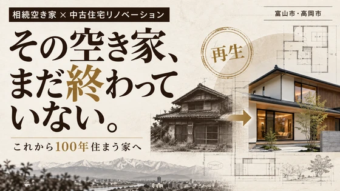
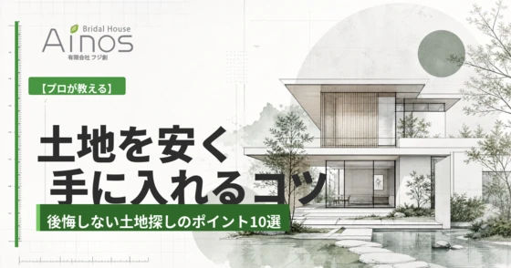
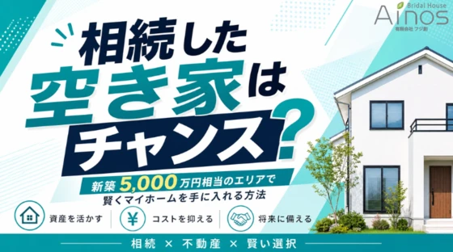
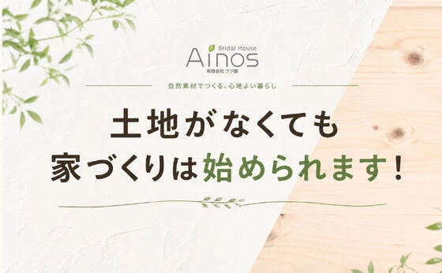

富山市、高岡市で相続空き家が増えています古い家を「これから100年住める家」に再生する
「親から実家を相続したけれど、誰も住む人がいない」 ...
続きを読む →FUJISOU AINOS JOURNAL
家づくりのこと、暮らしのこと。
日々の想いを、お伝えします。
土地情報 8件 ／ 新しい記事から 1・1ページ

「親から実家を相続したけれど、誰も住む人がいない」 ...
続きを読む →
マイホームを建てる際、多くの人が最初に直面するのが「土地探し」です。 「できるだけ安く土地を購入したい」 「予算内で理想...
続きを読む →
「マイホームが欲しいけれど、新築は価格が高くて手が届かない...」 そんな悩みを抱える方が増えています。 建築資材や人...
続きを読む →
「家を建てたいけれど、まだ土地が決まっていない...」 そんな方は意外と多く、実際に家づくり...
続きを読む →
こんにちは、富山で自然素材にこだわるホンモノの家。フジ創アイノスです。 弊社不動産ホームページではフジ創のおうちを建てるのに最適な 「オススメの土地」を紹介しています。 連休中でも土地についての詳しい質問にお答えします
続きを読む →こんにちは、富山で自然素材にこだわるホンモノの家。フジ創アイノスです。 弊社不動産ホームページではフジ創のおうちを建てるのに最適な 「オススメの土地」を紹介しています。 連休中でも土地についての詳しい質問にお答えします
続きを読む →こんにちは、富山で自然素材にこだわるホンモノの家。フジ創アイノスです。 弊社不動産ホームページではフジ創の おうちを建てるのに最適な 「オススメの土地」 を紹介しています。 土地についての詳しい情報は 電話でお問い合わせ
続きを読む →こんにちは、富山で自然素材にこだわるホンモノの家。フジ創アイノスです。 弊社不動産ホームページではフジ創の おうちを建てるのに最適な 「オススメの土地」 を紹介しています。 土地についての詳しい情報は 電話でお問い合わせ
続きを読む →